10 - GenAI: Modern Systems
CAS Agentic AI & Deep Learning - Computer Vision (Part1)
Institute for Data Science I4DS, FHNW
From Pixels to Latents
Why Pixel-Space Diffusion Is Expensive
| Resolution | RGB values |
|---|---|
| 512 × 512 | 786,432 |
| 1024 × 1024 | 3,145,728 |
The denoiser processes this full representation at every step.
Compress Images into Latents
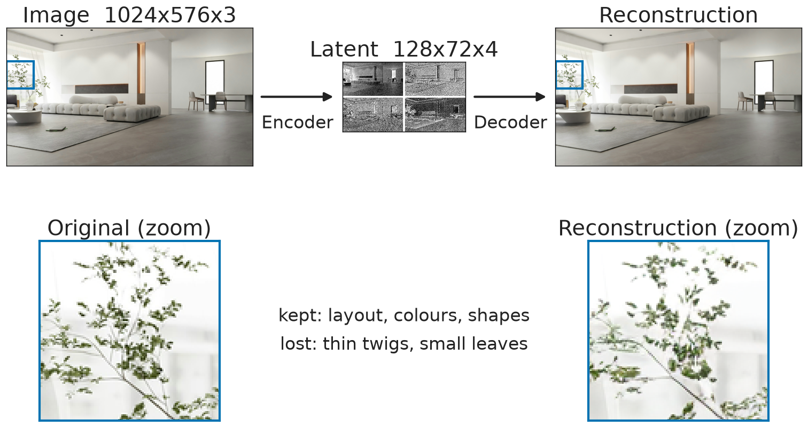
SD-XL VAE: the latent keeps what the denoiser needs, the decoder restores the pixels.
Latent Diffusion Architecture
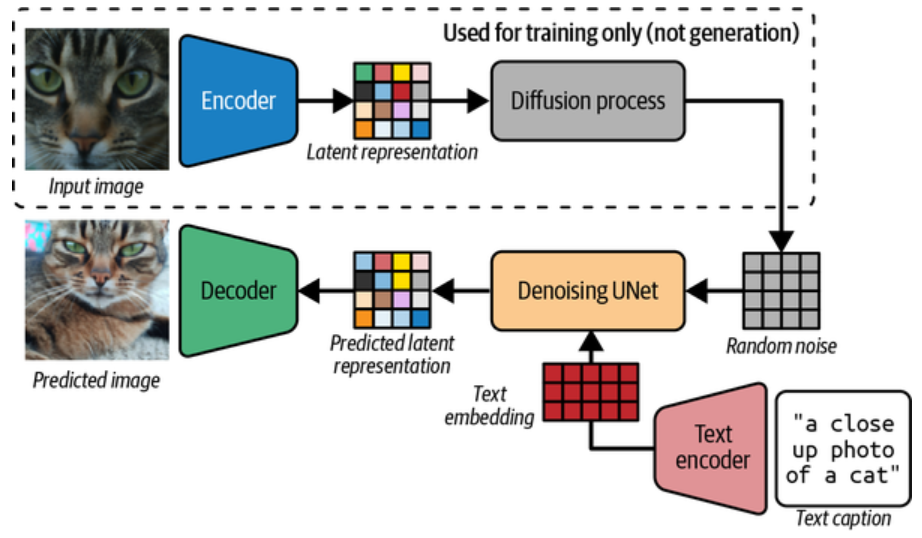
Training: \(\mathbf{x} \xrightarrow{\text{encoder}} \mathbf{z}\), add noise, learn to denoise \(\mathbf{z}\)
Generation: \(\mathbf{z}_T \rightarrow \cdots \rightarrow \mathbf{z}_0 \xrightarrow{\text{decoder}} \hat{\mathbf{x}}\). For editing, the encoder runs at inference too.
Why It Works, and What It Costs
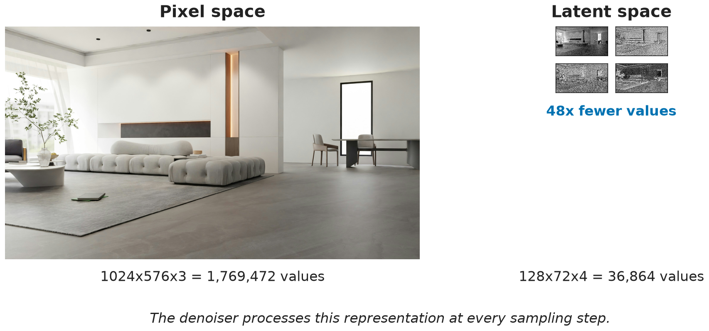
Not 48× faster: cost also depends on the network, attention grows with tokens², plus one decoder pass.
Fine detail (small text, faces) is limited by what the VAE can reconstruct.
What Latent Diffusion Can Do
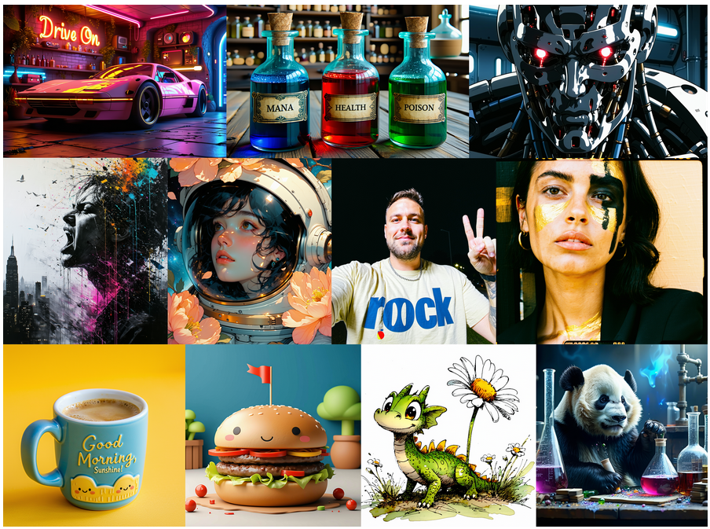
Stable Diffusion 3.5 Large: diverse styles and legible text, still generated in a VAE latent space (Esser et al. (2024)).
Quiz: Who Does What?
Which component generates the image content, and which turns it into pixels?
The denoiser generates a latent. The VAE decoder turns it into pixels.
And to edit an existing photo, which component is needed in addition?
The VAE encoder: the input image has to enter latent space first.
Modern Architectures
From U-Net to Diffusion Transformer
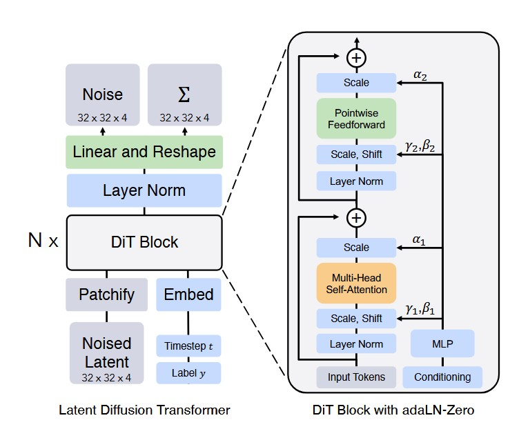
Latent → sequence of patch tokens, denoised with self-attention (Peebles and Xie (2023)).
SD3 / FLUX: diffusion transformer + flow matching. Architecture and objective are separate choices.
How Language Conditions the Image
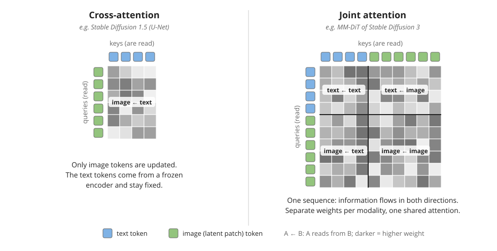
Cross-attention: image tokens read fixed text tokens. Joint attention: text and image tokens update each other.
Three Ways to Build Multimodal Generators
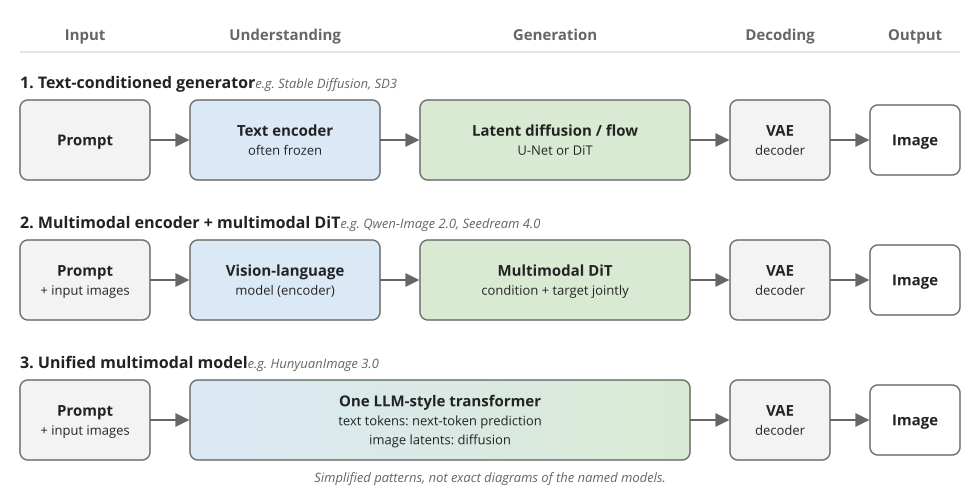
All three still generate the image with diffusion or flow matching in a VAE latent space.
Qwen-Image 2.0
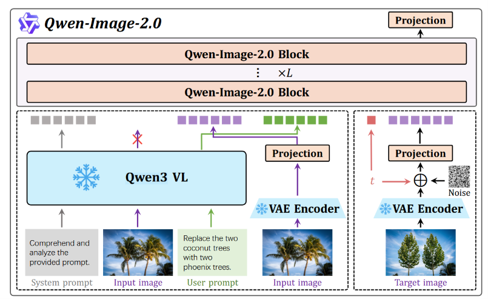
Qwen3-VL (frozen) reads instruction + input image: what to change. VAE of the input image: how it looks.
A multimodal diffusion transformer denoises the target latents jointly with all condition tokens (Zhao et al. (2026)).
Generation vs. Editing
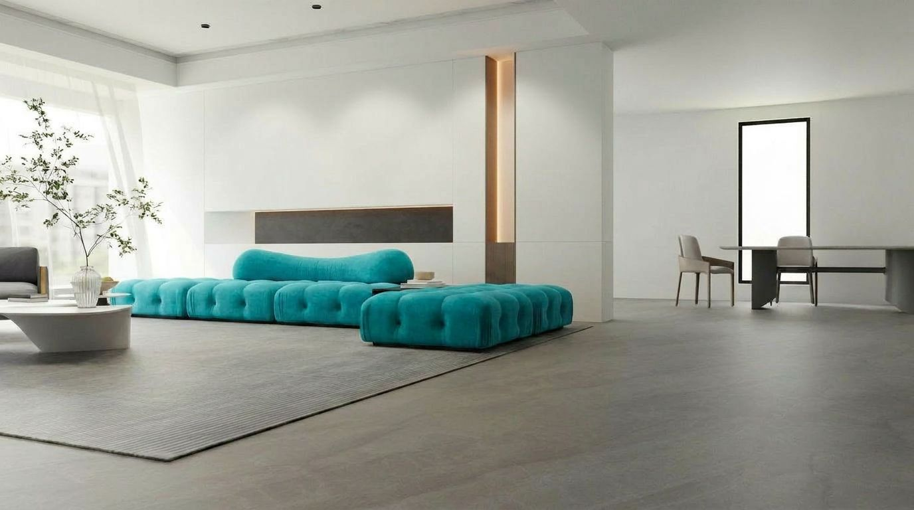
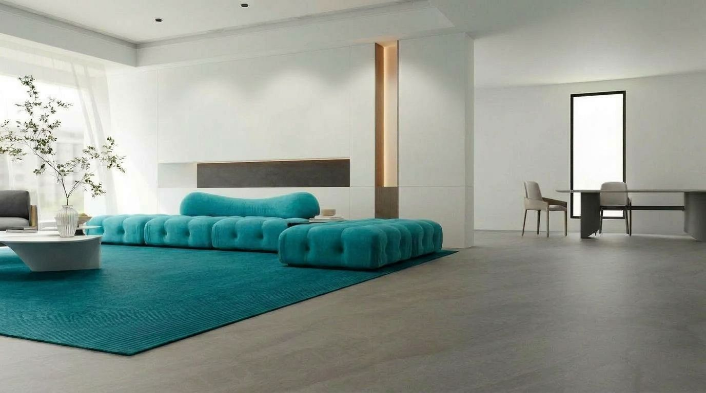
Model vs. System
- Tool-orchestrated: a language model writes a prompt and calls a separate image model
- Natively multimodal: one model understands and generates (pattern 3)
The user sees one assistant. Inside, it is a system for understanding, planning, generating and editing.
Same Edit, Two Models
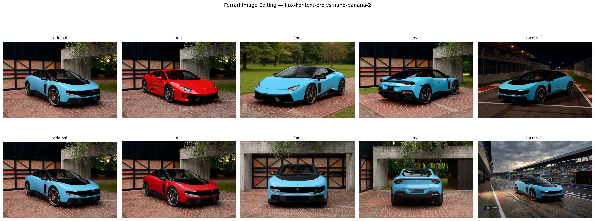
FLUX Kontext Pro (top) vs. Nano Banana 2 (bottom): who keeps the car’s identity?
Quiz: Why a Vision-Language Model?
Why might an editing model benefit from a vision-language model rather than only a text encoder?
A text encoder sees only the words. A VLM reads the instruction together with the input image, so it can resolve “the two trees” or “match the sofa”.
Exercise: Pretrained Generative Models and APIs
Generate and edit images yourself with hosted models.
Part 2: Adapting and Using Generative Models
The Right Image, Consistently
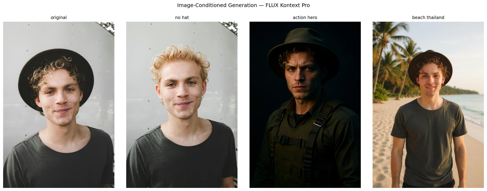
Good images are not enough: can it produce the right subject consistently for this use case?
Choosing an Adaptation Strategy
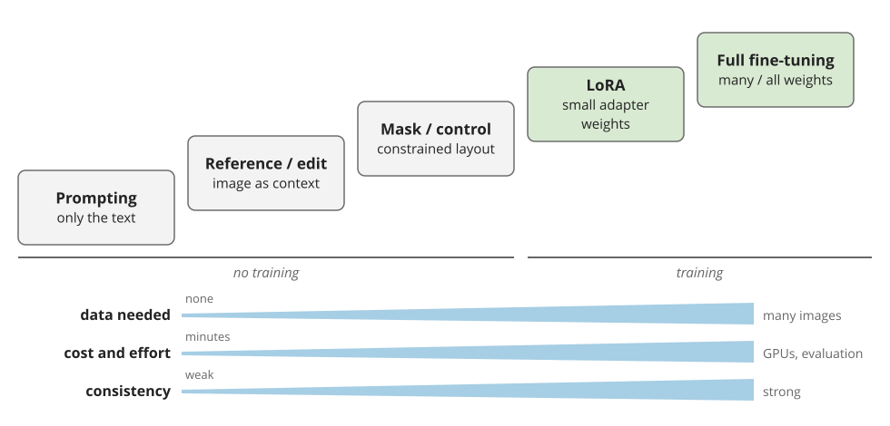
Fine-tune only when the same failure repeats and simpler controls are not enough.
Quiz: Pick the Method
- One advertising visual of your product on a beach
- Your company mascot in 200 different scenes
- Swap the background of an existing product photo
1 → prompt + reference image · 2 → LoRA · 3 → inpainting / editing
Novel Domains
When Realism Isn’t Enough

MRI → CT with a ResViT GAN (Schärer (2023)): a plausible CT is not enough, anatomy and dose-relevant structure must be correct.
Deployment & Responsible Use
Accessing Image Models
| Pattern | Strength | Limit |
|---|---|---|
| Hosted API | fast, strong models | opaque, vendor dependency |
| Enterprise platform | IAM, logging, compliance | setup, lock-in |
| Open-weight | control, privacy, adapters | operations, GPU cost |
Start hosted. Move when governance, control or adaptation matter.
Plausible but Wrong
The electric Ferrari Luce, with an exhaust pipe? Visually convincing ≠ correct.
Synthetic Data
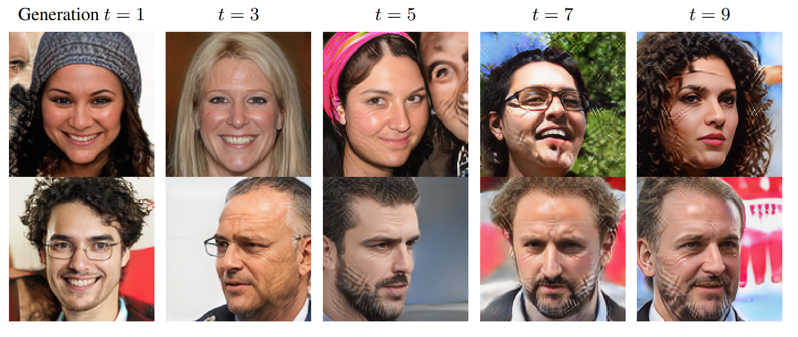
Replacing real data with synthetic data degrades models (Alemohammad et al. (2023)). Accumulating alongside real data avoids it (Gerstgrasser et al. (2024)).
Test: does it improve performance on the real target distribution?
Bias in Generated Images
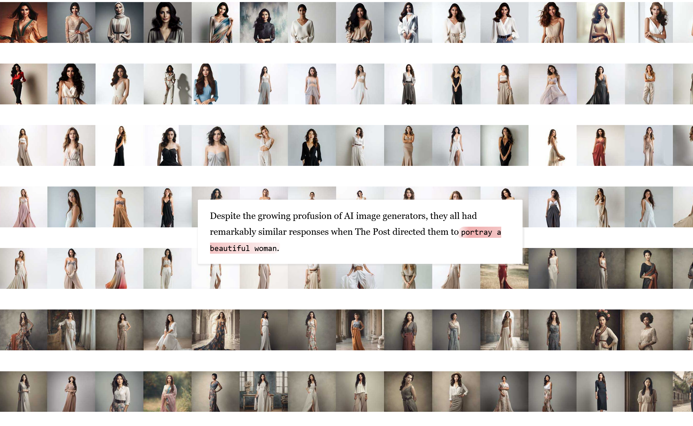
Stereotyped associations (Source: Washington Post). The risk depends on the use case.
Quiz: Real or Not?
Increasingly hard to tell from the image alone. (Source: Spiegel.)
Fake in a Familiar Interface
Fake crater next to the Washington Monument, made with Google Earth’s AI image feature. Source
The image carried an invisible watermark, but a phone photo of the screen was no longer detected.
Provenance: No Single Fix
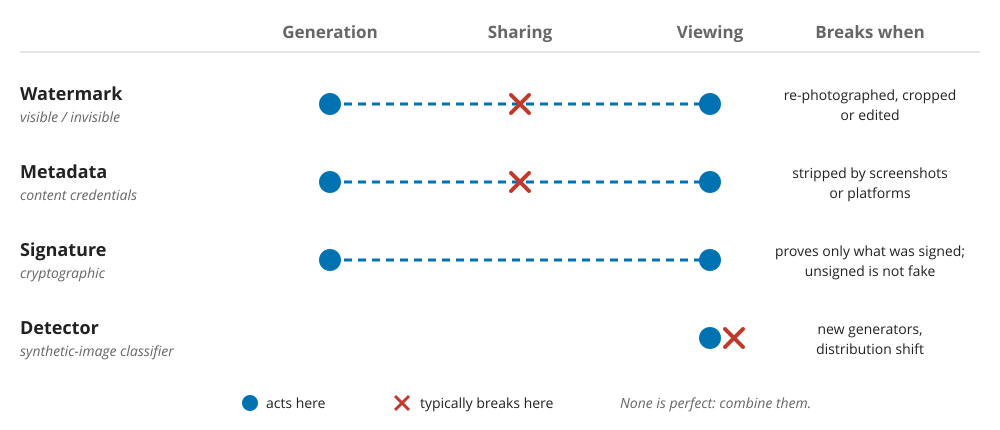
Provenance is a system-level problem.
Copyright & Licensing
- Which data trained the model?
- Do model and adapter licenses allow your use?
- Who owns the reference images, and can outputs be used commercially?
Before You Use a Generated Image
- How risky is the use case?
- Could it mislead?
- Consent, identity, privacy?
- License constraints?
- Could it reinforce stereotypes?
References
Backup
Where the Model Uses Each Word
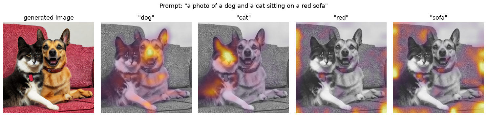
Cross-attention maps of Stable Diffusion 1.5, averaged over heads, layers and sampling steps.
U-Net vs. Diffusion Transformer
| Aspect | U-Net | Diffusion Transformer |
|---|---|---|
| Representation | spatial feature maps | token sequence |
| Main op | conv + attention | self-attention + MLP |
| Inductive bias | strong image locality | general sequence modeling |
| Conditioning | cross-attention | cross-attn / joint attention |
| Multimodal | possible | more natural |
The Adaptation Spectrum
| Method | What changes | When |
|---|---|---|
| Prompting | only the text | fast exploration |
| Reference images / editing | input context | one-off subject or local edit |
| Masks / inpainting / control | constrained generation | spatial / structural control |
| Textual inversion | a learned token | lightweight concept |
| LoRA / DreamBooth-LoRA | small adapter weights | persistent specialization |
| Full fine-tuning | many / all weights | strongly specialized domain |
Adaptation Tooling
Replicate
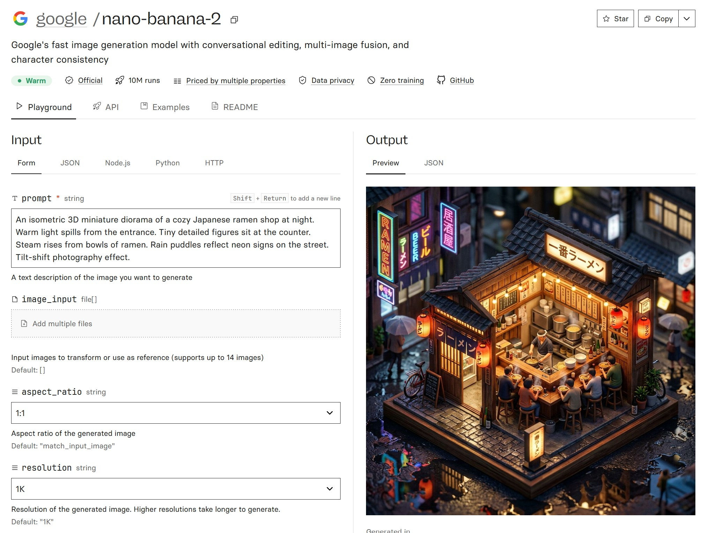
Hosted access to both proprietary and open-weight models.
Bias: The Washington Post Analysis
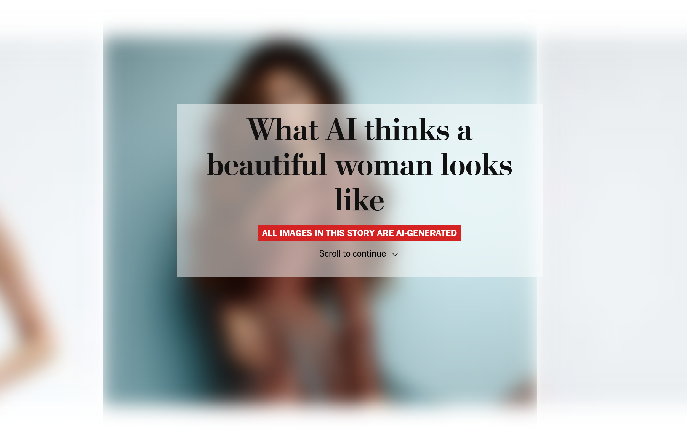